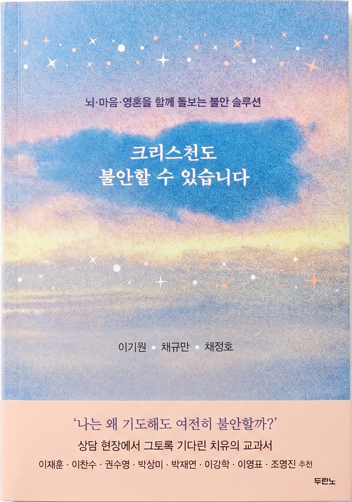

몸의 돌봄
불안할 때 내 뇌와 몸에서 실제로 무슨 일이 일어날까요?
- 편도체·전전두엽 등 뇌의 작동 원리를 쉽게 풀어 줍니다
- 약과 치료를 신앙 안에서 어떻게 받아들일지 정직하게 다룹니다
- 자책 대신 이해로 — "내가 약한 게 아니었구나"
뇌 · 마음 · 영혼을 함께 돌보는 불안 솔루션
목회자 × 임상심리사 × 정신과 의사가 함께 처방하는,
한국 최초의 통합 불안 솔루션.

하나라도 마음에 걸린다면, 이 책은 당신을 위한 책입니다.
5명 중 1명 이상의 교회 출석 그리스도인이
최근 2주간 불안·우울로 고통받았습니다
최근 2주간
우울을 경험
최근 2주간
불안을 경험
— 《한국교회 트렌드 2025》 · 교회 출석 그리스도인 6,700명 조사
통합적 접근
하나님은 우리를 몸과 마음과 영혼이 하나로 연결된 존재로 지으셨습니다.
그래서 진짜 회복도 이 셋을 함께 돌볼 때 일어납니다.
불안할 때 내 뇌와 몸에서 실제로 무슨 일이 일어날까요?
불안이라는 '렌즈'가 세상을 왜곡하고 있지는 않나요?
믿음의 사람들도 두려워했습니다.
SELF-CHECK
지난 2주 동안 아래 경험을 얼마나 자주 했는지 솔직하게 골라 주세요. 책 1장의 불안 자가점검을 빈도 척도로 재구성한 참고용 도구입니다.
이 자가진단은 의학적 진단이 아닌 참고용입니다. 점수가 높지 않더라도 고통이 크다면, 정확한 평가와 진단을 위해 정신건강 전문가와 상담하시기를 권합니다.
RECOMMENDATIONS
"불안에 대한 성경적이며 또한 실제적인 분석을 담은 이 책은, 불안과 함께 살아가는 많은 분에게 귀한 길잡이가 될 것입니다."
"이 책을 통해 긴장과 불안이 어떻게 다른지 알게 됐다. 불안을 물리치고 평안을 알려 주는 안내서가 되기를 바란다."
"의학·심리·신앙을 하나로 엮어 진짜 회복의 길을 열어 주는 책이다. 지금 바로 일독을 강력하게 권한다."
"불안 앞에 홀로 서 있던 성도들에게, 이 책은 정죄 대신 이해를, 단순한 위로 대신 통합적 치유의 길을 건넵니다."
"불안을 숨기려 애쓰기보다 정직하게 인정하며 하나님 앞으로 나아갈 때 회복이 시작될 것입니다."
"불안한 영혼을 따뜻하고 부드럽게 어루만지며 동반해 주는 책. 존재의 영원한 기반인 하나님께 닻을 내리도록 돕는다."
이재훈 · 이찬수 · 권수영 · 박상미 · 박재연 · 이강학 · 이영표 · 조영진 외 다수 추천
이기원 목사님과 함께
전인 치유와 통합적 회복을 위한 훈련 프로그램입니다. 불안을 혼자 짊어지지 않고, 안전한 관계 안에서 이해받고 회복해 가는 길을 함께 걷습니다.
관계기술훈련
남겨 주시면 관계기술훈련팀이 확인 후 연락드립니다. 편하게 적어 주세요.
소중한 마음 나눠 주셔서 감사합니다.
관계기술훈련팀이 확인 후 빠르게 연락드리겠습니다.
(본 페이지는 시연용으로, 실제로 전송되지는 않습니다.)